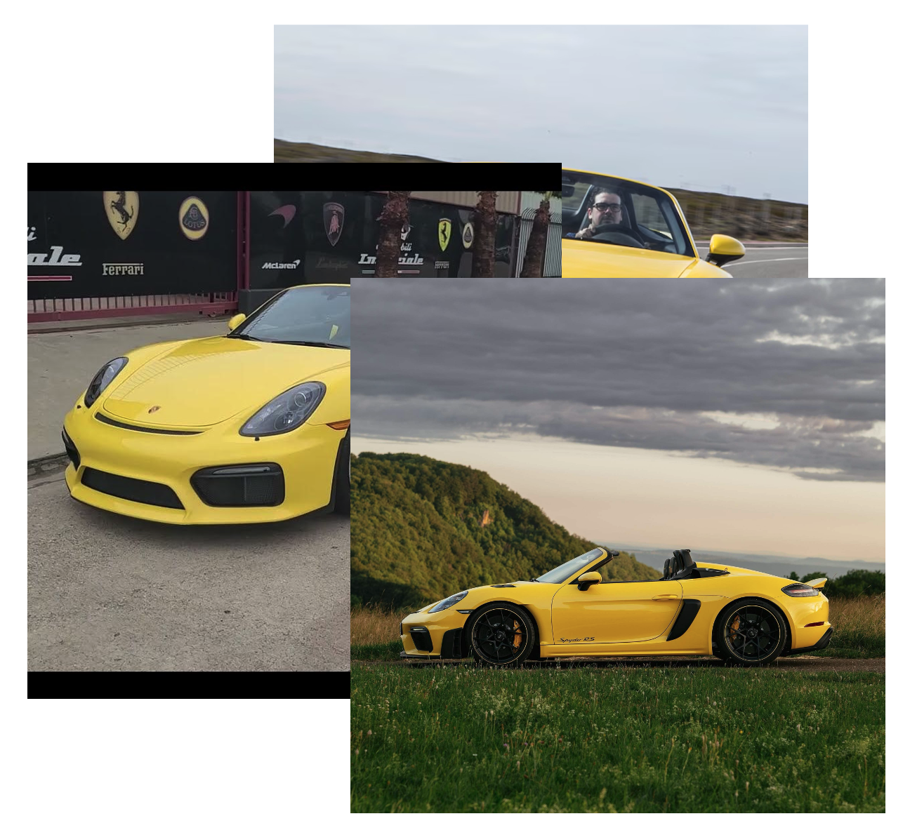
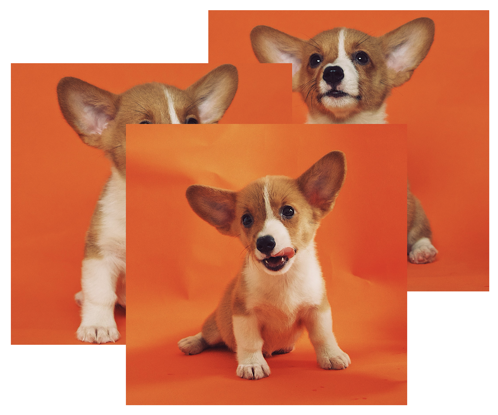
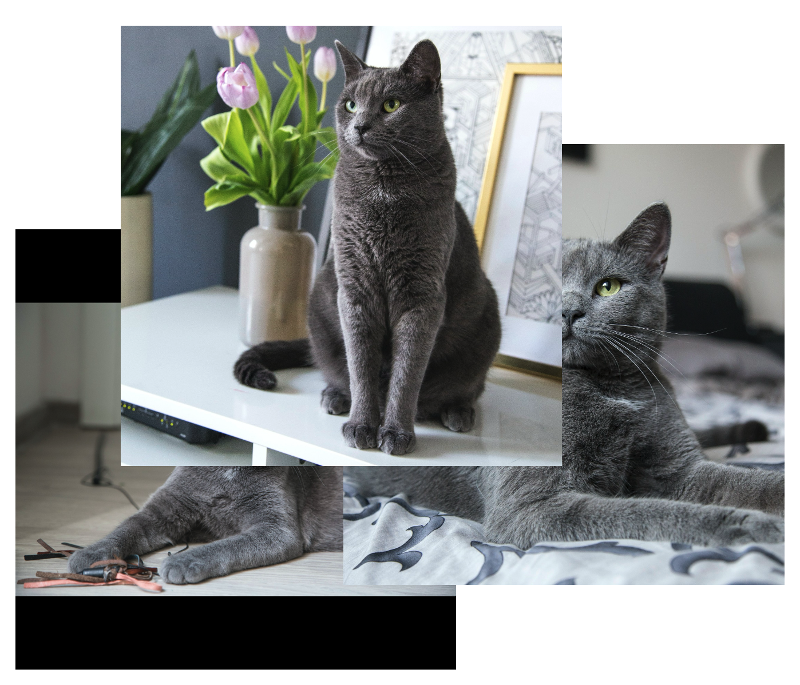

Building on the success of diffusion models in image generation and editing, video editing has recently gained substantial attention. However, maintaining temporal consistency and motion alignment still remains challenging. To address these issues, this paper proposes DINO-guided Video Editing (DIVE), a framework designed to facilitate subject-driven editing in source videos conditioned on either target text prompts or reference images with specific identities. The core of DIVE lies in leveraging the powerful semantic features extracted from a pretrained DINOv2 model as implicit correspondences to guide the editing process. Specifically, to ensure temporal motion consistency, DIVE employs DINO features to align with the motion trajectory of the source video. For precise subject editing, DIVE incorporates the DINO features of reference images into a pretrained text-to-image model to learn Low-Rank Adaptations (LoRAs), effectively registering the target subject’s identity. Extensive experiments on diverse real-world videos demonstrate that our framework can achieve high-quality editing results with robust motion consistency, highlighting the potential of DINO to contribute to video editing.
Overall pipeline of DIVE. It consists of three primary stages: temporal motion modeling, subject identity registration, and inference. In the first stage, we extract the DINO features from the source video and align them into the diffusion feature space through learnable MLPs to serve as motion guidance. In the second stage, we incorporate the DINO features of reference images into a pretrained T2I model to learn a Low-Rank Adaptation (LoRA) for identity guidance. During the final inference stage, we use DDIM inversion to obtain the latent noise of the source video and replace the source subject with the target subject in the text prompt, using both the motion and identity guidance learned from the previous two stages.
| Source Video | Target Identity | ||
|
a “ white car” driving down a road with windmills in the background |
 |
silver jeep |
|
| Source Video | Target Identity | ||
|
a “ kitten” walking across a lush green field of grass |
 |  |
white fox |
Source Video
a “ wolf ” standing in the woods and turning heads
Target Identity
DIVE (Ours)
TokenFlow
AnyV2V
FLATTEN
RAVE
Source Video
a “ jeep” driving on a curvy road in the contryside
Target Identity
DIVE (Ours)
TokenFlow
AnyV2V
FLATTEN
RAVE